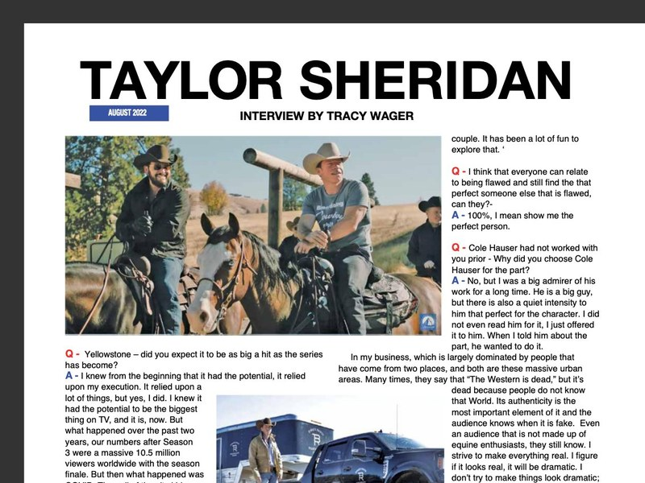

I knew from the beginning that it had the potential, it relied upon my execution. It relied upon a lot of things, but yes, I did. I knew it had the potential to be the biggest thing on TV, and it is, now. But what happened over the past two years, our numbers after Season 3 were a massive 10.5 million viewers worldwide with the season finale. But then what happened was COVID. Then all of the city kids found it. They discovered it in New York, in L.A. and it became hip to be a cowboy again. Which was the goal. But now it has become such a juggernaut, Season 4 of Yellowstone is the most purchased show of any TV show on iTunes, and it isn't even out yet! Those are pre-orders. I feel like, there is no telling what the numbers will be when this airs in a few weeks. I am really anxious to see. Real curious to see. The goal was to have it bigger than the "Who shot JR on Dallas."
No. I knew the character was iconic, and sort of this throwback to the black hat with the good heart. I did not even know at the time that I was going to write this romance between Rip and Beth that seems to have just enamored the audience. I had this unique opportunity to avoid all of the clichés that we see in these romances and let these two hideously flawed people be the perfect couple. It has been a lot of fun to explore that.
100%, I mean show me the perfect person.
No, but I was a big admirer of his work for a long time. He is a big guy, but there is also a quiet intensity to him that perfect for the character. I did not even read him for it, I just offered it to him. When I told him about the part, he wanted to do it.
He was really intrigued by this World. When he read the script, he really responded to it. This is a genre he is familiar with. He has done a few Westerns, and he was fortunate that all of the Westerns he was in were very well done. A couple of them, he directed himself. He enjoys this World, and thru this lens. He had never seen something about a modern-day ranch, albeit highly dramatized and fictionalized, but he had never seen this World presented this way before. He splits his time between California, and he has a ranch in Colorado, so it is a World that he knows. He also wanted to be a part of something like this that was physical.
In my business, which is largely dominated by people that have come from two places, and both are these massive urban areas. Many times, they say that "The Western is dead," but it's dead because people do not know that World. Its authenticity is the most important element of it and the audience knows when it is fake. Even an audience that is not made up of equine enthusiasts, they still know. I strive to make everything real. I figure if it looks real, it will be dramatic. I don't try to make things look dramatic; I try to make things look real. That is the reason I spend so much time with these actors at what I call Cowboy Camp. They are on horseback 8 hours a day, and we are trying to get them as comfortable as possible, so I can utilize them to do things on horseback. The more comfortable they are, the more I can film it, the more that I can show the World.
I grew up on a ranch and rode my whole life. The funny thing is, I didn't really like it that much when I was a kid. We had to do it. I worked on some ranches during the Summers, and you know, when you are 14, 16, 18 years old and getting a horse job is not that exciting. When I graduated from High School, I don't know that I got on a horse again until I was in my late 20's, when I would go up to Wyoming. I bounced around up there, pulled some pack trips, and again, it was a job. It wasn't really until I discovered Reining that I really fell in love with it, the riding. I enjoyed the horses, but it was Reining that made me fall in love with the horses.
The journey was so difficult. I had met my wife, and we had fallen in love, and we were moving to Wyoming. I was trying to buy this little place in Wyoming when I was re-negotiating my deal with Sons of Anarchy for Season 3, and they offered me really poor money. Like not enough to be able to buy a $300,000 house in Star Valley, Wyoming. They said, "Look, you are right." I still remember when their attorney said, "You do deserve more, but we are not going to pay you more because we don't have to. You are just a Journeyman, that is all you are ever going to be. So, take your licks and be quiet". I realized right then that they are right, and how can I raise my son in this town and tell him he could be whatever he wants to be, but I am going to miss his Soccer practice because I am going to a Windex commercial audition, or whatever the case may be. So, I decided I was done telling other people's stories, I was going to tell my own, and I quit and started writing. It was two years before I sold a script, and we were down to our last nickel. In fact, I had gotten a job up in Wyoming at the headwaters of Grovont as the wrangler to wrangle all of the horses for this Dude ranch. They didn't allow kids in the employee housing, so my wife and my baby were going to have to stay in a trailer park in Pinedale. Which, as you can image, none of us were happy about. We were pretty desperate, so I sold all of my horses, we got moved out of our house and into a crummy apartment. My wife took jobs, and I took any job that I could get, as far as anything! Mow lawns, do anything. I taught acting classes, I did everything I could and then finally I sold "Hell or High Water". The day it sold I had $800.00 in my bank account and rent was coming up.
What I believed was what I had worked for as an actor. I had read, I don't know how many scripts over my career, 500 or a 1,000? I could not remember 5 that were great stories. Now, I wasn't Brad Pitt, so I wasn't getting the scripts he was reading, but I sat down one day and said, "I have no idea how to do this, but I know how not to do it. Because I have been reading bad scripts my entire career". So, I decided to tell a story about something I cared about. To be honest, to be very disciplined and economical, don't explain things with the dialogue, explain things with the vista of what I am seeing and then just let the characters talk about it. It is really that simple. Hell or High Water, was a story about where I lived in West Texas as a kid. It was on fire, everybody was selling everything they had, as far as horses and cattle because there was no food. All the auction houses even closed down. They would not even take any more cattle. It was watching this way of life, that seemed like a constant to Me die. So, Hell or High Water was for the love of Texas, and an homage to a way of life that seemed like it was disappearing.
I do it very different that anyone else does it and Paramount lets me. I don't know how to make a TV show. I know how to make an independent movie, because that's what I had made. What I did, was make Yellowstone like I made a movie. I wrote all the scripts and then we went and filmed it. Then I cut it together and then we aired it. By Paramount trusting me, and letting me just treat it like that, without committees and all these things and notes and whatever. They said, "Just go make it good Taylor." Which is what I did. It streamlined the process. Mayor was quite difficult because it shot in Canada. I just keep my head down and keep working. If I look up it gets to be too much for me. So, I just keep my head down and work.
Well, that was the goal. Look, I was alive when Urban Cowboy came out and when Dallas was a hit. I was a kid, but I remember it. We had been wearing Cowboy hats and boots always because I lived in Texas, but then they popped up everywhere! But Urban Cowboy, even the name denotes it, it had nothing to do with Cowboy's. It's about a guy that is going to ride a mechanical bull in a bar in Houston. Dallas was about a rich oil family. No one had ever made a story of Cowboys; you saw it just like I did. In 2010 I was with Tom Foran, he is a good friend of mine, and the horse market and everything else just collapsed, it felt like that era was ending. I wanted to do something to revive it. If you think about horses, it is really the only sport that you can do with your kids. You can drive them to soccer, you can watch them do motor-cross, you can take your daughter to gymnastics, or dance or your kid to baseball, or whatever. But you can't do it with them. This you can do with them! I think it is so important to have things that you can do with your family. I ride a lot of Cutting horses now, because my wife likes to show the Cutters. I said, "Ok, I'll get a Cutter too." My son loves to rope, so I said, "Ok, I'll get a rope horse." We do these things together! So, I wanted to do everything I could to show the real world and shift the wrong thinking about what a Cowboy really is to what the Western Lifestyle really is. To make it cool, not trendy, because it is cool! Nothing is cooler than going out at 4:30 in the morning and gathering 300 head of cattle. There is just nothing cooler!
It is very possible, yes. If I can figure out the story. It must benefit the Ranch and it has to benefit the audience. I have no idea what it will be about, look I had no idea what 1883 would be about until it came to me! The Network said, "We want you to do another show." I said, "OK." They wanted to do a spin-off of Yellowstone, and I did not want to do a spin-off. I said, "Look, let me do the origins story. If we do the story of these folks going West, that is an interesting story! Let's tell that story." So, that is what we did. I told them that, and they bought it! Then they called and asked, "When are we getting the script?" I said, I don't know, I haven't figured it out yet. I can't write it until I know the story. Then one day it hit me. I was actually talking with Sam Elliott and the whole thing hit me. Then I met the actress that is playing one of the leads in it, and then the structure made sense to me. Then I wrote it and that is how it is with all of my scripts. Until I understand how the thing ends, and the reason I am telling the story, I cannot begin it.
It is a funny thing about that, I don't even get paid for it really. It is such a labor of love, and it's done exactly what I wanted it to! It has brought an excitement to the Horse Shows again. It has increased interest. Call any trainer, call anyone. I was speaking to Gary at the NRHA, call him and he is going to tell you how many more members they have now. We have more people just going to Horse Shows. Just showing up to watch. I believe it is the future, which is why I keep adding so much money to these events and getting media attention, is because the future of this is as a spectator sport. Watching The Run for A Million, and you were there too, there is not a more exciting hour of athletics on the planet!
I made it for the audience! I did not make it for the riders. I gave the riders an opportunity to win a whole lot of money, because that's their job! They are professional riders. But I make the horse show for the people sitting in the stands. Because at the end of the day that is what I am, I am a showman, and I am putting on a show! I just did an aged event in Cutting, it was a Derby called the Brazos Bash. It is the highest paying 4, 5, 6 and 7 year old event of the year. It had the highest attendance it ever had. And, I treated it just like I treat The Run for A Million, it was a rock concert and people had fun again. Because at the end of the day, that's why the Non-Pros (who drive the business, they are the horse owners) are doing it. They are doing it because the love it! Now, for an Open rider to be successful, he has to love it too, or he is not going to want to sit on horses for 12 hours a day, haul all over the Country and sleep in hotels and be on the road all the time. The Open riders have to love to do it obviously, but it has to be an experience for the Non-Pros. The horses are too expensive, it costs too much, it takes too much time to not enjoy. My goal is to affect all of the other shows. It is going to bring more attention to the sport, it is going to bring more sponsors, it is going to bring more awareness, it is going to up the prize money everywhere, and it already has! Not just in Reining, it has happened in Cutting and the Cow Horse already. The bigger the horse shows get, the better it is for the whole industry. I have some plans that I cannot talk about yet, but it is where I am going to start getting all of these finals on television. The Networks are now noticing, and the Sponsors are watching. If you look at the PBR and what they did. They did a fantastic job of marketing the experience, the excitement of Bull Riding. Yet I still find it more exciting to watch a 228 run, or a 230 run in Reining. I just do not think there is anything like it, and it is so conducive to television! I think the future of Reining, and quite honestly all of the Performance Horse events is going to be as a spectator sport, that is aired on television.
Yes, and they did! The first year of The Run for A Million took a lot of trust. When I started reaching out to the riders, the first one was an invitational because there was no other way to do it. They hung it out there, and then when they went to the event, they all got it. And now, it is the premier event in Reining!
Well, thank you Tracy. Sometimes it is better to be lucky that good! I just recognized there was an opportunity, I had a window and I jumped through it. And then, everyone jumped with me. People have tried this before; I am not the first person to try this. Everyone got on board, and everyone trusted and supported me and as a result we have this great thing. The goal is never to make money with The Run for A Million and when you give away 1.3 million dollars at a horse show you are not going to make any money! I am not trying too either. What it pays me in satisfaction to see an industry re-energized, and with so many new people coming into the sport, to all of the equine sports, that was my goal. That was the goal with The Run for A Million and it will continue to be my goal. I think the World is a better place with horses in it and people riding them. With more people riding them, the more people can set differences aside and focus on what we have in common. That is the goal.
Well, Thank You. All I want to do is bring happiness and excitement to the Horse World. This World, for 40 years of my life, told me "No" in everything I tried to do. When I had a kid and I had a wife that believed in me, I stopped taking "No" for an answer. That does not mean that I don't still hear it all of the time, I just do not accept it. I was determined that I was going to do something that was going to have a big impact. And look, I am lucky because I have this platform where I can continue to do it. To introduce people to the real riders. I had Todd Bergen, Bob Avila, Andrea Fappani, the entire McCutcheon and McQuay family and I worked it into the story, and we do a lot more of it in Season 4 of Yellowstone. I really show the World what is like to be a Cowboy and I really show the World what the Horse Show life it. Because now that I know that the audience really, really likes that, I am feeding them more and more and more of it.
Not listening to the word "No" — isn't that very hard to do?
Yeah, it is! It was the hardest lesson that I ever learned. It was not accepting NO, and the flip side of that coin is knowing when to say it yourself.